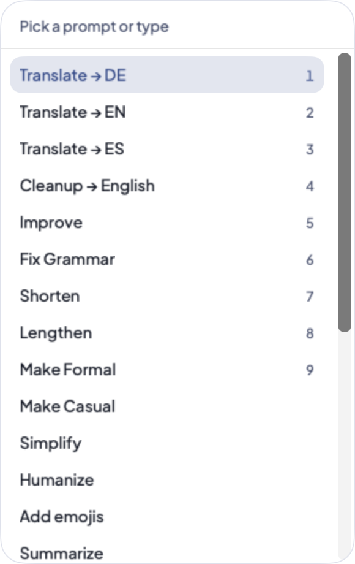
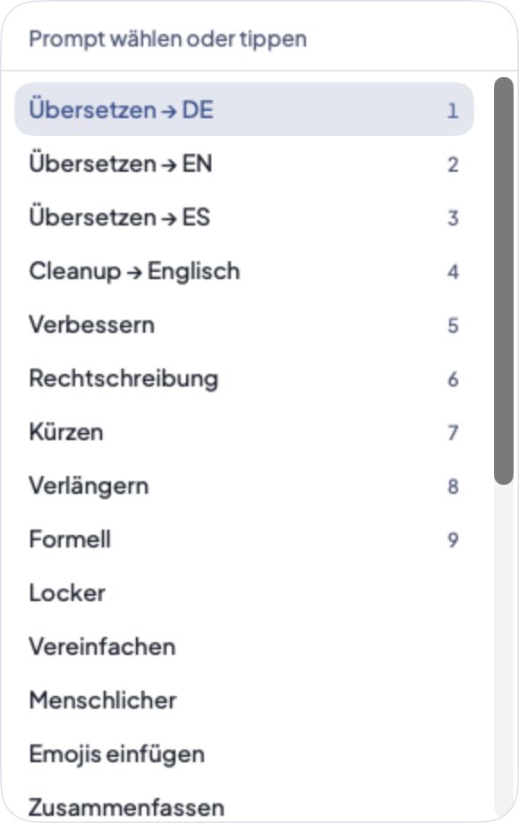

Mark text.
Hit ⌥⌘T.
AI fixes it.
Text markieren.
⌥⌘T drücken.
KI macht den Rest.
Rewrite, translate and reply at your cursor, in any Mac app. One menu bar app instead of eight, open source, with your own key or fully local.
Schreibe um, übersetze und antworte direkt am Cursor, in jeder Mac-App. Eine Menüleisten-App statt acht, Open Source, mit eigenem Key oder komplett lokal.
Free app, no subscription. Run it locally or with your own API key, and pay your provider directly. Kostenlose App, kein Abo. Lokal nutzen oder mit eigenem API-Key, den Anbieter bezahlst du direkt. MIT licensed · Apple Silicon · macOS 15+ MIT-Lizenz · Apple Silicon · macOS 15+

New in 2.39: voice note. ⌃⌥⌘N floats your quick notes over everything and starts dictation.Neu in 2.39: Sprachnotiz. ⌃⌥⌘N zeigt deine Schnellnotizen schwebend über allem und startet das Diktat.
One app instead of eight
Eine App statt acht
At its core, Tippi is AI writing right where you type. Around it sit the small helpers most people install one by one.
Im Kern ist Tippi KI-Schreiben genau da, wo du tippst. Dazu kommen die kleinen Helfer, die man sonst einzeln installiert.
Write
Schreiben
AI writing right where your cursor is.
KI-Schreiben direkt am Cursor.
-
24 curated built-in prompts
24 kuratierte Built-in-Prompts
Instead of Grammarly or copying text into a chat app and backStatt Grammarly oder Text in eine Chat-App kopieren und wieder zurück
Improve, Fix grammar, Translate, TL;DR, Email reply and more. Edit each one or add your own.
Verbessern, Rechtschreibung, Übersetzen, TL;DR, E-Mail-Antwort und mehr. Jeden kannst du anpassen oder eigene dazulegen.
-
Type or speak an instruction
Anweisung tippen oder sprechen
Select text, then type or say what you want, such as "reply to this email". Tippi applies it with AI.
Markiere Text und tippe oder sprich, was du willst, etwa „antworte auf diese Mail“. Tippi setzt es per KI um.
-
Streaming preview & refine
Live-Vorschau & Verfeinern
With most cloud providers the result streams in live. Refine it in place as often as you like, for example "shorter" or "more formal", before you replace your text.
Bei den meisten Cloud-Anbietern erscheint das Ergebnis live. Du verfeinerst es direkt, etwa mit „kürzer“ oder „förmlicher“, so oft du willst, bevor du deinen Text ersetzt.
Show 6 more6 weitere anzeigen
-
Prompt chains
Prompt-Ketten
Link several prompts behind one hotkey, and each step's output feeds the next. You see live progress, and a failed step keeps the last good result. One chain is built in.
Verkette mehrere Prompts hinter einem Hotkey, die Ausgabe jedes Schritts wird zur nächsten Eingabe. Du siehst den Fortschritt live, und bei einem Fehler bleibt das letzte gute Ergebnis.
-
Smart variables
Smarte Variablen
Put
{clipboard},{app_name},{language}or{selected_text}into a prompt, and Tippi fills them in when you run it. One prompt then fits the app and text at hand.Setz
{clipboard},{app_name},{language}oder{selected_text}in einen Prompt, und Tippi füllt sie beim Start aus. So passt sich ein Prompt der App und deinem Text an. -
Ambient prompt filtering
Ambient-Prompt-Filter
The prompt list narrows as you type, in the popup or the instruction field. Number keys 1 to 9 still pick a prompt, and ⎋ clears the search before closing the popup.
Die Prompt-Liste filtert beim Tippen, im Popup oder im Anweisungsfeld. Die Zifferntasten 1 bis 9 wählen weiter einen Prompt, und ⎋ löscht erst die Suche, dann schließt es das Popup.
-
Apple Intelligence on board
Apple Intelligence an Bord
On macOS 26 and later, Apple's on-device model works as a provider. You need no key and no download, and your text stays on the Mac. It does well at cleanup and emojis.
Ab macOS 26 kann Apples Modell auf dem Mac als Anbieter arbeiten. Du brauchst keinen Schlüssel und keinen Download, dein Text bleibt auf dem Mac. Stark bei Bereinigen und Emojis.
-
One-click local AI
Lokale KI in einem Klick
Run AI fully on your Mac with Apple Silicon. Tippi installs the MLX toolchain from Settings in one click, no Terminal needed. Your text then stays on your Mac.
KI komplett lokal auf deinem Mac mit Apple Silicon. Tippi installiert die MLX-Toolchain mit einem Klick aus den Einstellungen, ganz ohne Terminal. Dein Text bleibt dann auf dem Mac.
-
Autocomplete as you type (Labs)
Autovervollständigung (Labs)
Pause for a moment and your local model suggests the rest of the sentence in grey. ⇥ takes one word, ⇧⇥ all of it. Runs only on your Mac, off until you turn it on.
Halte kurz inne, und dein lokales Modell schlägt den Rest des Satzes grau vor. ⇥ übernimmt ein Wort, ⇧⇥ alles. Läuft nur auf deinem Mac und ist aus, bis du es einschaltest.
Speak
Sprechen
Dictation that stays on your Mac.
Diktat, das auf deinem Mac bleibt.
-
Dictation modes
Diktat-Modi
Hold one extra key with your dictation key: ⇧ improves the text, control calms an angry message, ⌘ adds emojis, the other ⌥ runs a prompt you pick.
Halte zur Diktat-Taste eine Zusatztaste: ⇧ verbessert, control macht aus Ärger eine sachliche Nachricht, ⌘ setzt Emojis, die andere ⌥ startet deinen Prompt.
-
Dictation that fits the sentence
Diktat, das in den Satz passt
Dictate into the middle of a sentence and Tippi fixes the edges (spacing, lowercase, no stray period) with fixed rules, not AI.
Diktierst du mitten in einen Satz, passt Tippi die Ränder an (Leerzeichen, Kleinschreibung, kein überflüssiger Punkt), mit festen Regeln statt KI.
-
Voice input
Spracheingabe
Instead of Superwhisper or Wispr FlowStatt Superwhisper oder Wispr Flow
Dictate on a single key: double-tap to start and stop, or hold it while you speak. ⌃⌥⌘B writes emails with line breaks. Whisper or Parakeet run on your Mac, no audio leaves it.
Diktiere auf einer Taste: zweimal antippen startet und stoppt, halten nimmt auf, solange du sprichst. ⌃⌥⌘B setzt Mails mit Absätzen. Whisper oder Parakeet laufen auf deinem Mac.
Show 3 more3 weitere anzeigen
-
Return after dictation, per app
Enter nach dem Diktat, pro App
For apps you pick, like a chat, Tippi presses Return once the dictated text is in. In terminals only text the AI left unchanged is sent. Off until you add an app.
In Apps, die du auswählst, etwa einem Chat, drückt Tippi nach dem Diktat Enter. In Terminals geht nur Text raus, den die KI nicht verändert hat. Aus, bis du eine App einträgst.
-
Remember dictation corrections
Diktatkorrekturen merken
Does “Google Fonts” keep coming out as “Google Fonds”? After dictating, confirm the correct phrase in the Tippi menu. The optional rule stays on this Mac.
Schreibt Tippi immer wieder „Google Fonds“ statt „Google Fonts“? Bestätige nach dem Diktat die richtige Wortgruppe im Tippi-Menü. Die Regel bleibt auf diesem Mac.
-
Live text while you dictate
Text live beim Diktieren
The recording window shows your words as you speak, in three text sizes and six positions. The same local model writes the final text, so nothing changes when you stop.
Das Aufnahmefenster zeigt deine Worte schon beim Sprechen, in drei Schriftgrößen und an sechs Stellen. Derselbe lokale Erkenner schreibt den Text, nichts springt um.
Helpers
Helfer
The small helpers you would otherwise install one by one.
Die kleinen Helfer, die man sonst einzeln installiert.
-
Text Snippets
Text-Snippets
Instead of Espanso or TextExpanderStatt Espanso oder TextExpander
Type a trigger anywhere and it expands at once, no hotkey needed. Espanso files import, and shell commands only run once you approve them.
Tippe ein Kürzel, und es wird sofort ersetzt, ohne Hotkey. Espanso-Dateien lassen sich importieren, Shell-Befehle laufen erst nach Freigabe.
-
Emoji picker & shortcodes
Emoji-Auswahl & Kürzel
Instead of the Rocket appStatt der Rocket-App
Press ⌥⌘E for a picker with recents first, or type
:rocket:for 🚀, anywhere. German and English names work, and suggestions appear as you type.⌥⌘E öffnet eine Auswahl mit den zuletzt genutzten oben, oder du tippst
:rakete:für 🚀, überall. Deutsche und englische Namen gehen, Vorschläge erscheinen beim Tippen. -
Translate Quick Panel
Übersetzungs-Fenster
Instead of the DeepL appStatt der DeepL-App
Press ⌥⌘L for a small window that takes your selection, or type or speak. Five languages, read-aloud, and Replace (⌘⏎) writes the translation back over your text.
⌥⌘L öffnet ein kleines Fenster, das deine Markierung übernimmt, oder du tippst oder sprichst. Fünf Sprachen, Vorlesen, und Ersetzen (⌘⏎) schreibt die Übersetzung über deinen Text.
Show 6 more6 weitere anzeigen
-
Auto-popup on selection
Auto-Popup bei Auswahl
Instead of the PopClip appStatt der PopClip-App
Select text anywhere and the quick-actions bar appears right next to it, like PopClip. You choose the position, and it moves aside for other apps' popups. Off by default.
Markiere irgendwo Text, und die Aktionsleiste erscheint direkt daneben, wie bei PopClip. Die Position wählst du selbst, und sie weicht Popups anderer Apps aus. Ab Werk ist sie aus.
-
Local quick actions
Lokale Schnellaktionen
Instead of TextSoap or a word counterStatt TextSoap oder einem Wortzähler
Bold, bullets, quotes, UPPER and lower case, url-style-slugs, umlauts to ae, word count and more. They run instantly on your Mac, without AI, from the ⌥⌘T popup and the selection bar.
Fett, Aufzählung, Anführungszeichen, GROSS und klein, adress-taugliche-schreibweise, Umlaute zu ae, Wörter zählen und mehr. Das läuft sofort auf deinem Mac, ohne KI, im ⌥⌘T-Popup und in der Auswahlleiste.
-
Notes window
Notizen-Fenster
Instead of Apple Notes or a notes appStatt Apple Notizen oder einer Notiz-App
Press ⌥⌘N for plain .txt notes in iCloud Drive on all your Macs. ⌃⌥⌘N floats your quick notes over everything and dictates straight into the note “Inbox”.
⌥⌘N öffnet Notizen als reine .txt-Dateien in iCloud Drive, auf allen Macs. ⌃⌥⌘N lässt die Schnellnotizen über allem schweben und diktiert direkt in „Eingang“.
-
Text from a screen selection
Text vom Bildschirm
Instead of TextSniper or CleanShot XStatt TextSniper oder CleanShot X
Press ⌥⌘2 and drag over anything you can't copy, like a screenshot or an image PDF. The text lands in your clipboard, recognized on your Mac. Off until you turn it on.
Drück ⌥⌘2 und zieh ein Rechteck über alles, was sich nicht kopieren lässt, etwa einen Screenshot. Der Text landet in der Zwischenablage, erkannt auf deinem Mac. Ab Werk ist das aus.
-
Currency converter
Währungsrechner
Select an amount like 23 € or USD 1,100, click €→$ and pick a favorite currency. Tippi shows the result and copies it, or adds it right after. 28 currencies, rates updated daily.
Markiere einen Betrag wie 23 € oder USD 1,100, klick auf €→$, wähle eine Lieblingswährung. Tippi zeigt und kopiert das Ergebnis, auf Wunsch auch dahinter. 28 Währungen, Kurse täglich.
-
Generate a password
Passwort erzeugen
From the menu bar or popup: 12 characters with upper and lower case, a digit and a symbol, no look-alikes. Tippi inserts it and keeps it on the clipboard for 60 seconds.
Aus Menüleiste oder Popup: 12 Zeichen mit Groß- und Kleinbuchstaben, Ziffer und Sonderzeichen, ohne Verwechsler. Tippi setzt es am Cursor ein und hält es 60 Sekunden bereit.
Trust
Vertrauen
You see what it does and what it needs.
Du siehst, was es tut und was es braucht.
-
System-wide hotkey
Systemweiter Hotkey
Works in any app, with no switch to a chat window or another tab. Each hotkey shows whether it is really registered and tells you when another app already uses it.
Funktioniert in jeder App, ohne Wechsel in ein Chat-Fenster oder anderen Tab. Jeder Hotkey zeigt, ob er wirklich registriert ist, und sagt es, wenn eine andere App ihn belegt.
-
Permissions at a glance
Berechtigungen auf einen Blick
One settings page lists every permission Tippi may ask for, shows whether it is granted and why it is needed, and opens the right spot in System Settings with one click.
Eine Einstellungsseite zeigt jede Berechtigung, die Tippi anfragen kann, ob sie erteilt ist und wofür Tippi sie braucht. Ein Klick öffnet die richtige Stelle in den Systemeinstellungen.
-
Says what broke, and what to do
Sagt, was klemmt und was hilft
When something fails, the menu bar names the cause and shows the next step. Tippi also sends one silent notice per issue.
Fällt etwas aus, nennt die Menüleiste die Ursache und den nächsten Schritt. Tippi meldet sich einmal, ohne Ton.
It is not about the price. Eight helper apps mean eight sets of permissions to grant again after macOS updates, eight things to keep current and eight places where hotkeys collide. Tippi is one app, with one set of permissions and one update path.
Es geht nicht ums Geld. Acht Helfer-Apps heißen: acht Mal Berechtigungen erteilen, nach macOS-Updates oft wieder, acht Programme aktuell halten und acht Stellen, an denen sich Tastenkürzel in die Quere kommen. Tippi ist eine App, mit einem Satz Berechtigungen und einem Update-Weg.
How it works
So funktioniert Tippi
Three steps. One hotkey. Zero context switching.
Drei Schritte. Ein Hotkey. Kein Kontext-Wechsel.
Select text anywhere
Text irgendwo markieren
Mail, Safari, Notes, Slack, VS Code, Pages: any text field, any app on macOS.
Mail, Safari, Notes, Slack, VS Code, Pages: jedes Textfeld, jede App unter macOS.
Press ⌥⌘T
⌥⌘T drücken
A small popup appears at your cursor. Pick one of 24 built-in prompts or your own custom ones.
Ein kleines Popup erscheint am Cursor. Wähle einen der 24 eingebauten Prompts oder einen eigenen.
Replace in place
An Ort und Stelle ersetzen
See the AI's rewrite side-by-side with the original (with most cloud providers it streams in live), refine it in place, then replace, append, copy, or regenerate.
Der KI-Vorschlag erscheint neben dem Original, bei den meisten Cloud-Anbietern live Stück für Stück, direkt verfeinerbar. Dann ersetzen, anhängen, kopieren oder neu generieren.
Why Tippi
Warum Tippi
What you get that you don't get from cloud-only assistants.
Was du bei Cloud-Tools nicht bekommst.
| What others doAndere | Tippi |
|---|---|
| Open a new tab, paste your text, copy the answer backNeuer Tab, Text einfügen, Antwort zurückkopieren | Works in every app, right at your cursorIn jeder App, direkt am Cursor |
| Locked to one providerAn einen Anbieter gebunden | 8 providers, pick what works for you8 Anbieter zur freien Wahl |
| One menu-bar utility per job: emoji, snippets, selection bar, dictation, translation, notes, text toolsEin Menüleisten-Tool pro Aufgabe: Emoji, Kürzel, Auswahlleiste, Diktat, Übersetzung, Notizen, Text-Tools | One app instead of eight: one permission set, one update path, no hotkey collisionsEine App statt acht: ein Satz Berechtigungen, ein Update-Weg, keine Hotkey-Konflikte |
| Cloud-only, your text leaves your MacNur Cloud, dein Text verlässt deinen Mac | Two local engines (MLX, Ollama), fully offline optionZwei lokale Engines (MLX, Ollama), komplett offline möglich |
| SubscriptionAbo-Modell | Free, open-source (MIT), bring your own keyKostenlos, Open Source (MIT), BYOK |
| Telemetry, analytics, "anonymized" dataTelemetrie, Analytics, „anonymisierte" Daten | Zero telemetry, no analytics, no crash reportsNull Telemetrie, kein Tracking, keine Crash-Reports |
Pick your AI provider
KI-Anbieter wählen
Cloud, local, or any mix. Swap with one click in Settings.
Cloud, lokal oder Mischung. In den Einstellungen ein Klick zum Wechseln.
Privacy by design
Datenschutz von Grund auf
Your text never reaches anything except the AI provider you explicitly configured.
Dein Text erreicht ausschließlich den KI-Anbieter, den du selbst konfiguriert hast.
Off by default. Tippi stores only the phrases you confirm. The last dictation excerpt stays in memory for up to five minutes.
Ab Werk aus. Tippi speichert nur die Wortgruppen, die du bestätigst. Der letzte Diktatausschnitt bleibt bis zu fünf Minuten im Arbeitsspeicher.
Tippi fetches only the daily rate table, always from the same address. Your selection and the amount stay on your Mac. Rates By Exchange Rate API.
Tippi holt nur die Tageskurs-Tabelle, immer von derselben Adresse. Deine Markierung und der Betrag bleiben auf dem Mac. Kurse: Exchange Rate API.
No analytics, no crash reporting, no usage stats.
Kein Analytics, keine Crash-Reports, keine Nutzungsstatistik.
What you type goes only to the local model Tippi started itself, never to a cloud provider. Password fields are never read, nothing is stored.
Was du tippst, geht nur an das lokale Modell, das Tippi selbst gestartet hat, nie an einen Cloud-Anbieter. Passwortfelder werden nie gelesen, nichts wird gespeichert.
By default, neither input nor output is written to disk. Optional: an encrypted local history (AES-GCM, key in your Keychain), off until you turn it on.
Standardmäßig wird weder Input noch Output gespeichert. Optional gibt es einen verschlüsselten lokalen Verlauf (AES-GCM, Schlüssel im Schlüsselbund), aus, bis du ihn einschaltest.
Stored exclusively in the macOS Keychain. No iCloud sync, no plaintext config.
Nur im macOS-Schlüsselbund. Kein iCloud-Sync, kein Klartext.
Whisper or Parakeet transcribe audio locally. Nothing is sent to any network endpoint.
Whisper oder Parakeet transkribieren auf dem Gerät. Nichts geht ins Netz.
MLX and Ollama backends run on your Mac, no cloud round-trip at all.
MLX und Ollama laufen lokal, kein Cloud-Roundtrip.
Every line on GitHub. MIT licensed. Audit it yourself.
Jede Zeile auf GitHub. MIT-Lizenz. Selbst nachprüfen.
24 prompts that ship with Tippi
24 Built-in-Prompts
All language-aware. All editable. Build your own on top.
Alle sprachbewusst. Alle anpassbar. Eigene draufsetzen.
Frequently asked questions
Häufige Fragen
The things people ask before downloading.
Was die meisten vor dem Download wissen wollen.
Is Tippi free?Ist Tippi kostenlos?
Yes. Tippi is open-source (MIT) and free to use. You bring your own API key for cloud providers, or run it fully locally with MLX or Ollama at no cost at all. There is no subscription and no upsell. If you want to give something back, you can buy Tippi a coffee.
Ja. Tippi ist Open Source (MIT) und kostenlos. Für Cloud-Anbieter bringst du deinen eigenen API-Key mit, oder du betreibst es komplett lokal mit MLX oder Ollama, dann ganz ohne Kosten. Kein Abo, kein Upselling. Wenn du etwas zurückgeben willst, kannst du Tippi einen Kaffee spendieren.
Does my text get sent to a server?Wird mein Text an einen Server geschickt?
Only to the AI provider you explicitly configured, nowhere else. Tippi has zero telemetry and no analytics. If you choose a local engine (MLX or Ollama), nothing leaves your Mac at all. Voice transcription always runs on-device.
Nur an den KI-Anbieter, den du selbst eingerichtet hast, sonst nirgendwohin. Tippi hat keine Telemetrie und keine Analytics. Wählst du eine lokale Engine (MLX oder Ollama), verlässt gar nichts deinen Mac. Die Sprach-Transkription läuft immer lokal.
Which AI providers are supported?Welche KI-Anbieter werden unterstützt?
Seven: OpenAI, Anthropic Claude, Google Gemini, Mistral, and OpenRouter (300+ models behind one key) in the cloud, plus Ollama and MLX fully local. The OpenAI default is GPT-6 Luna, with its reasoning switched off for speed. Switch between them with one click in Settings, and optionally fall back to a second provider automatically if one fails.
Sieben: OpenAI, Anthropic Claude, Google Gemini, Mistral und OpenRouter (300+ Modelle hinter einem Key) in der Cloud, dazu Ollama und MLX komplett lokal. Standard bei OpenAI ist GPT-6 Luna, mit abgeschaltetem Nachdenken für mehr Tempo. In den Einstellungen per Klick umschalten, auf Wunsch mit automatischem Fallback auf einen zweiten Anbieter.
Can I dictate and translate by voice?Kann ich diktieren und per Sprache übersetzen?
Yes. Dictation mode transcribes speech locally (Whisper or Parakeet) and inserts it at your cursor: either on a key combination, or on a single key you double-tap to toggle and hold to talk. The Translate Quick Panel (⌥⌘L) lets you speak text and hear the translation read back aloud: five languages (German, English, Spanish, French, Japanese), and the source language is detected automatically. Voice in, speech out, both on-device. A second hot key, ⌃⌥⌘B, dictates emails with greeting, paragraphs and sign-off.
Ja. Der Diktat-Modus transkribiert Sprache lokal (Whisper oder Parakeet) und fügt sie am Cursor ein: entweder per Tastenkombination oder über eine einzelne Taste, die du zum Umschalten zweimal antippst und zum Sprechen gedrückt hältst. Das Übersetzungs-Fenster (⌥⌘L) lässt dich Text einsprechen und die Übersetzung vorlesen: fünf Sprachen (Deutsch, Englisch, Spanisch, Französisch, Japanisch), die Ausgangssprache erkennt Tippi automatisch. Sprechen und Vorlesen laufen beide lokal. Ein zweites Kürzel, ⌃⌥⌘B, diktiert Mails mit Anrede, Absätzen und Grußformel.
Can I chain prompts together?Kann ich Prompts verketten?
Yes. A prompt can run several prompts in a row: each step's output becomes the next step's input, all behind one hotkey. In the prompt editor switch the type to "Chain" and add two or more steps (any built-in or custom prompt). The preview shows the current step live and streams the final result; if a step fails, the last good intermediate stays editable. A ready-made "Cleanup → English" chain ships built in.
Ja. Ein Prompt kann mehrere Prompts nacheinander ausführen: die Ausgabe jedes Schritts wird zur Eingabe des nächsten, alles hinter einem Hotkey. Im Prompt-Editor den Typ auf „Kette" stellen und zwei oder mehr Schritte hinzufügen (beliebige Built-in- oder eigene Prompts). Die Vorschau zeigt den aktuellen Schritt live und streamt das Endergebnis; scheitert ein Schritt, bleibt das letzte gültige Zwischenergebnis bearbeitbar. Eine fertige „Cleanup → Englisch"-Kette ist eingebaut.
Does it work in every app?Funktioniert es in jeder App?
Text capture and dictation work everywhere, including Electron/Chromium apps (Obsidian, Slack, VS Code). The one limit: replacing a selection in place inside Electron apps isn't possible. Tippi copies the result to the clipboard with a "press ⌘V" toast instead. Native apps (Mail, Notes, Safari, Pages) and Office get full in-place replacement.
Texterfassung und Diktat funktionieren überall, auch in Electron/Chromium-Apps (Obsidian, Slack, VS Code). Eine Grenze: Das direkte Ersetzen einer Auswahl in Electron-Apps geht nicht. Tippi legt das Ergebnis stattdessen in die Zwischenablage mit „⌘V drücken"-Hinweis. Native Apps (Mail, Notizen, Safari, Pages) und Office ersetzen direkt an Ort und Stelle.
What do I need to run it?Was brauche ich dafür?
macOS 15 Sequoia or later on Apple Silicon (M1-M5), and at least one AI provider: a cloud API key or a locally installed model. The setup wizard walks you through the Device Control and Data Access permission (called Accessibility before macOS 27) and adding a provider in about 30 seconds. Dictation asks for Microphone access the first time you use it. If you want to dictate using the single-key hot key, macOS additionally asks for Input Monitoring. Without it the key is simply ignored, with no error message to tell you why. Updates come automatically: Tippi checks at launch, or when you ask from the menu bar, and every download is a notarized DMG signed with a Developer ID.
macOS 15 Sequoia oder neuer auf Apple Silicon (M1-M5) und mindestens einen KI-Anbieter: einen Cloud-API-Key oder ein lokal installiertes Modell. Der Einrichtungs-Assistent führt dich in rund 30 Sekunden durch die Freigabe „Gerätesteuerung und Datenzugriff“ (vor macOS 27 „Bedienungshilfen“) und Anbieter-Setup. Beim ersten Diktat fragt macOS nach Zugriff auf das Mikrofon. Für das Diktat per Einzeltaste verlangt macOS zusätzlich die Eingabeüberwachung. Ohne sie bleibt die Taste wirkungslos, ohne jede Fehlermeldung. Updates kommen automatisch: Tippi sucht beim Start danach oder wenn du es über die Menüleiste anstößt, und jeder Download ist ein notarisiertes DMG mit Developer-ID-Signatur.
Try it in 60 seconds
In 60 Sekunden ausprobieren
Download the DMG, grant Device Control and Data Access (Accessibility before macOS 27; plus Input Monitoring if you want key-based dictation), add one API key (or install MLX with one click). Done.
DMG laden, „Gerätesteuerung und Datenzugriff“ erlauben (vor macOS 27 „Bedienungshilfen“; dazu die Eingabeüberwachung, wenn du per Einzeltaste diktieren willst), einen API-Key eintragen (oder MLX in einem Klick installieren). Fertig.
Tippi is free. If it saves you time, you can buy me a coffee.
Tippi ist kostenlos. Wenn es dir Zeit spart, kannst du mir einen Kaffee spendieren.
Buy me a coffee Spendier mir einen Kaffee